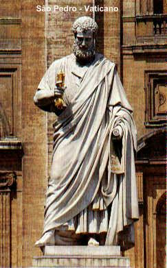

"A simplicidade de seu coração e sua pouca cultura, foram transformados pela Luz do Divino ESPÍRITO SANTO, num admirável, destemido, amoroso e fiel Discípulo do SENHOR, um poderoso pilar de sustentação do cristianismo."

ÍNDICE
MENSAGEM, EMAIL, FIRMAS DE BUSCAS